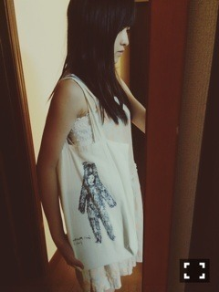
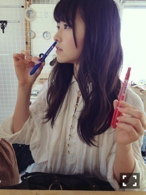

| 2014/08 09 Sat | 笑う月。591回目 |
っっっっちわ！！！

前回のブログ、沢山のコメント
本当にありがとうございました。
ひとつひとつしっかり
読ませていただきました。
みなさんに喜んでもらうこと、
笑顔になってもらうことが
いちばんの幸せ！
私らしくやっていくぞー
メールで送った
サイリウムの色を変更するか
迷ってる件ですが...
悩んだ末、変更なしにしました。
どうしても苔の緑と
元々好きな色である紫を入れたい。
他の色では考えられない、、
ということだ〜

この絵(しろ)くまりっくまみたい笑

裏も可愛い。
昔のライチのエコバックなの！
乃木坂46SHOW!で
ここにいる理由を披露しました〜
今までアンダー曲って
冠番組である乃木どこでしか
披露するだけだったけど、
他の番組で、しかもfullで
披露させてもらえるとは...。
ありがとうございました。
認められたのかなって勝手に思った。
10枚目も新しいことできたらいいな！
ライブ頑張ろう。
ガールズルールも歌った！
fullってなかなか貴重。
......
告知するよ〜
8月6日 Top Yell
アンダーライブについて
レポも載っている。
8月12日 EX大衆
可愛い服とメイクでした...
8月22日 Gザテレビジョン
ソログラビアです。
8月30日 BUBKA
飛鳥といっぱいしゃべった。
8月は充実しています。
ありがたいです。
発売中のMARQUEE
アンダーライブのこと、と、
柳沢監督のインタビューが
載っている...！わあああ
デビューシングルの個人pv
ナイフの監督さんです。
当時私は15歳だったから
具体的に自分はどんなものが
好きなのか理解していなかったけど、
この作品を撮ったことで、
すごい影響を受けてます。
大好きなAPOGEEさんを知ったのも
pvの挿入歌を歌ってくださったから。
お芝居に興味を持ったのも
ナイフがきっかけです。
お芝居好きになるとは思わなかったし
やりたいと思ってなかったけど
あの時初めて楽しいって思えて、
今ではお芝居することが
好きになりました。
沢山の方にいいねと言われてきて、
これがきっかけでファンになった！
って言ってくださる方も
今だにいるのです。
デビューシングルで
ナイフじゃなかったら
たぶん乃木坂浪漫でドグラマグラ
読んでないと思うなあ、なんて。
ダークな、アングラな...
アンニュイで毒がある。
そういう世界観。
それに、ナイフがなかったら
素晴らしい個人pvが続いて
特集までされなかったと思う。
2ndのデート前日の気持ち
5thのまりっか'17
監督の福島さんは
柳沢さんとお知り合い。
だから私にとってこれは
とても本当に大切で大事な作品。
いつか大きくなったら柳沢さんと
お仕事したい、なあ、、
あああああなんだと、、
いちばん語ってるじゃないか...
順位はつけられません。
インタビュー、普通に
ファンとして読んじゃった。
前にもブログでちょくちょく
ナイフのこと語ってたけど、
改めて長文で
語らせていただきました。

のぎ天、見てね
http://video.rakuten.co.jp/content/110967/?scid=wi_n46_official
んー、林檎さん聴いて
APOGEEさん聴いて
テンション上げよう！！うん！
まりか
コメント(506)
2014/08/09 08:54